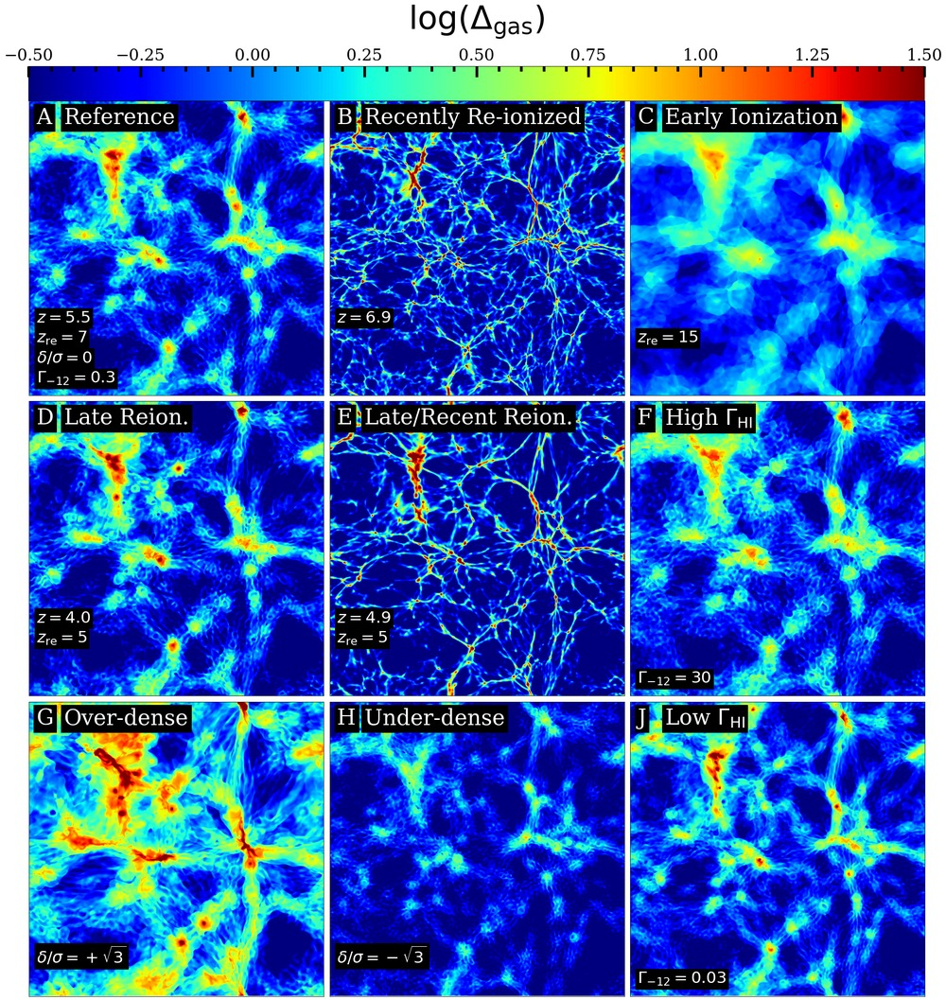
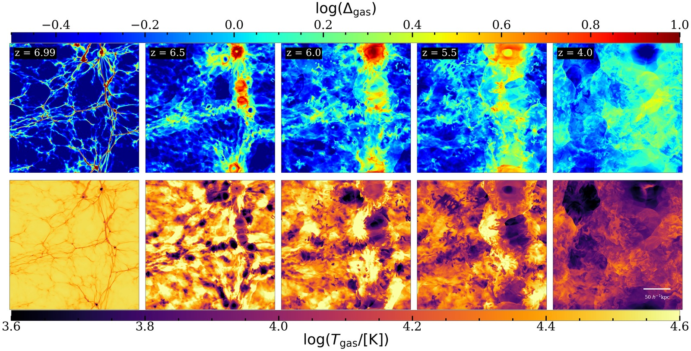
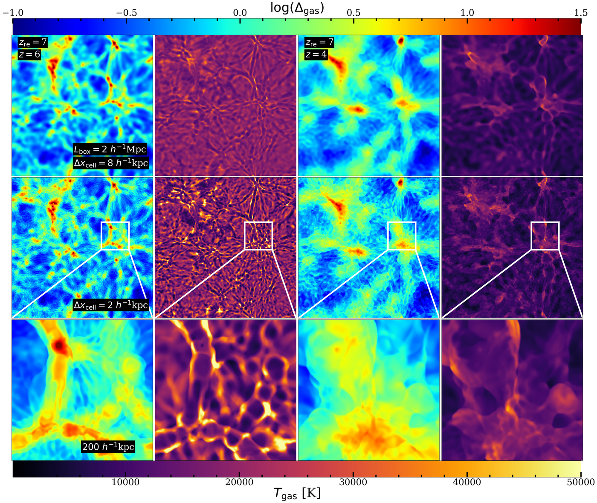
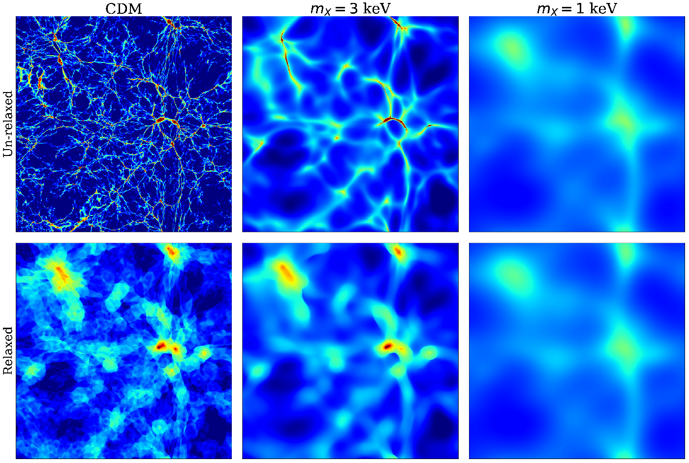
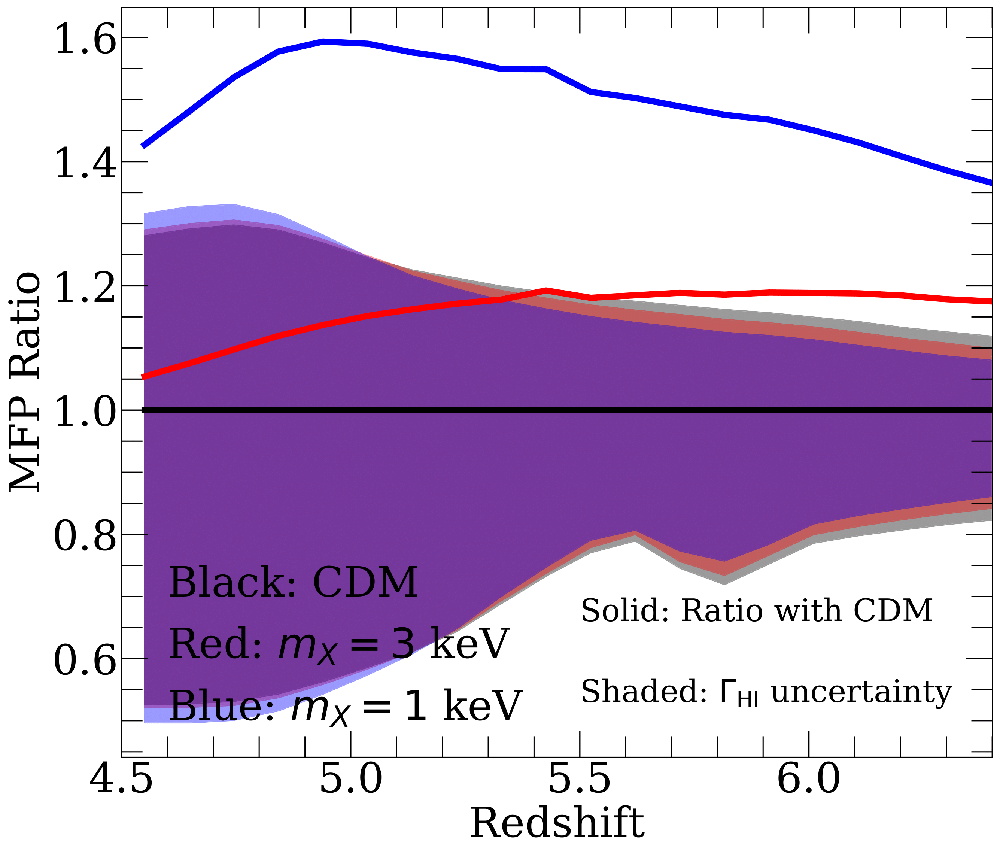
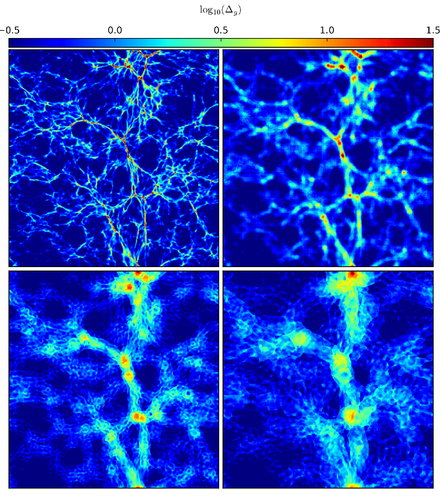
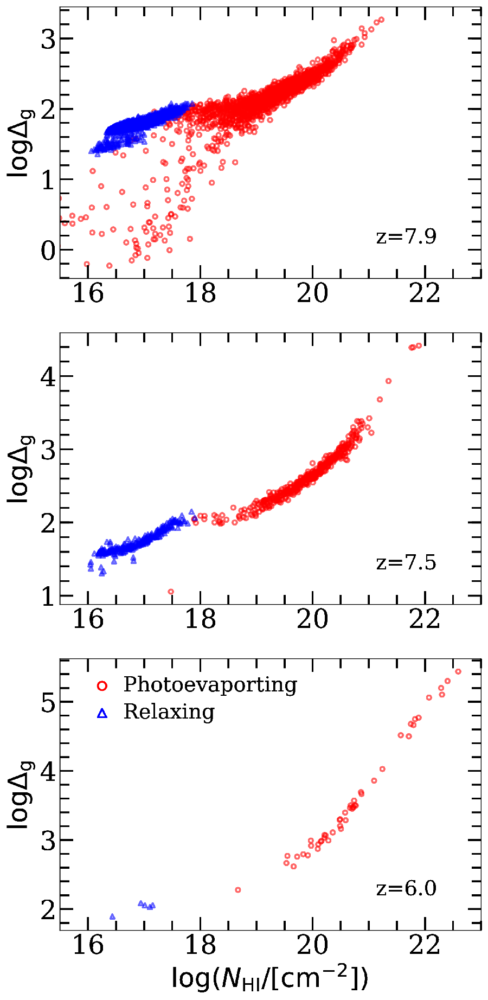
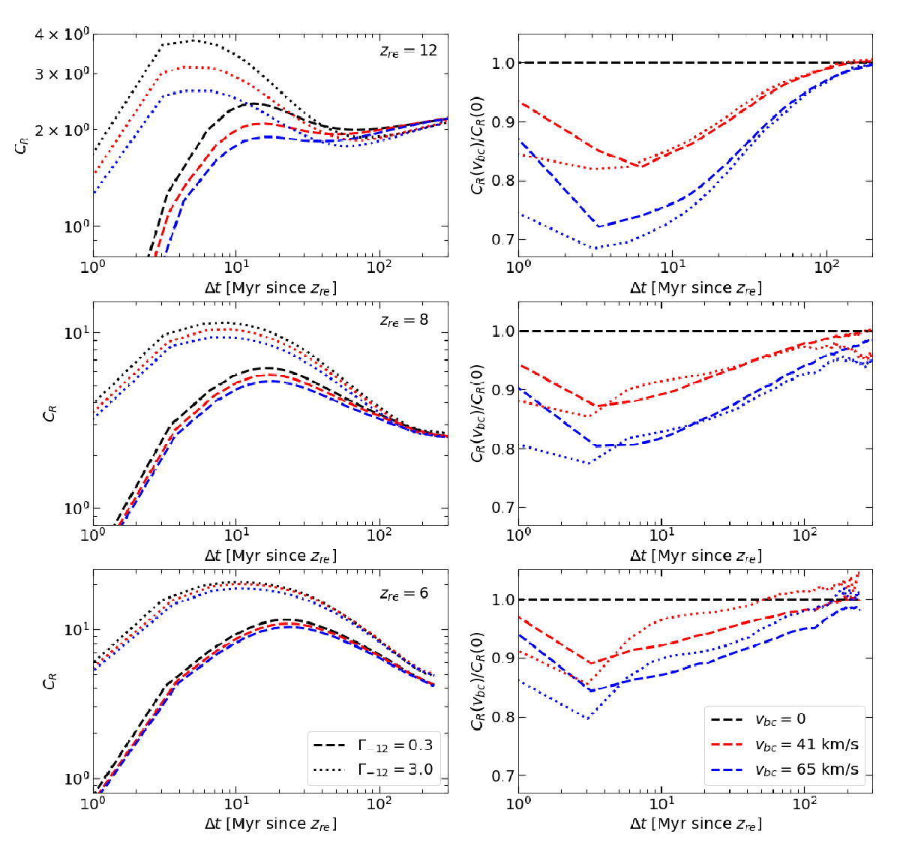
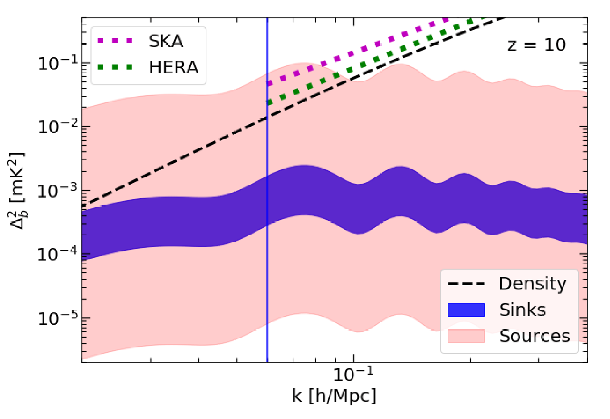

The SAGUARO simulations
Several recent studies, including those described below, have characterized the complex, dynamical response of the IGM to reionization down to kpc scales. However, this response depends sensitively on when a region was reionized, the strength of its local ionizing background, and whether it sits in an over- or under-dense part of the universe, and there had been no concentrated attempt to simulate these effects across the full range of IGM environments expected during reionization. To meet this need, I led the development of SAGUARO ("Simulating IGM Evolution and Environments At High Resolution"), which we introduced in Cain+26. SAGUARO is a suite of 236 high-resolution, fully coupled hydrodynamics/radiative transfer simulations of IGM gas dynamics during and after reionization, run with a modified version of the RadHydro code. The simulations use 10243 gas and RT cells in boxes of 2 Mpc/h and 0.25 Mpc/h, reaching spatial resolutions of 2 kpc/h and 244 pc/h, respectively - high enough to fully resolve the Jeans scale of the cold, neutral IGM before reionization. The "Core" suite includes all combinations of four reionization redshifts between z = 5 and 15, four photo-ionization rates spanning three orders of magnitude, and three box-scale densities, and is being extended to nearly 200 combinations. Additional runs explore the effects of X-ray pre-heating, the spectrum of the ionizing radiation, recombination radiation, baryon-dark matter streaming velocities, and warm dark matter.


The image on the left shows slices through the gas density field in several Core simulations. Panel A shows our reference simulation, reionized at z = 7, at z = 5.5. Panel B shows the same slice just after reionization (z = 6.9), when the gas is still clumpy down to very small scales - over the next several hundred Myr, Jeans smoothing erases much of this structure. Panels D and E repeat this comparison for a region reionized late (z = 5), and Panel C shows that a region reionized early (z = 15) retains much less small-scale structure at fixed redshift. Panels F and J show that a stronger (weaker) ionizing background results in less (more) pronounced, compact density peaks, owing to the interplay between self-shielding and Jeans smoothing. Panels G and H show the enhancement and suppression of structure formation in over- and under-dense regions, respectively.
In this first paper, we described the setup of SAGUARO and presented first results on the gas dynamics, thermal structure, opacity, and self-shielding properties of the IGM, the effect of the IGM on the reionization photon budget, and Lyman alpha transmission. Among other findings, we showed that the characteristic density at which gas self-shields is largely insensitive to the local reionization redshift and over-density, and scales with the photo-ionization rate as ΓHI0.6 across several orders of magnitude. We also found that the hydrodynamic response to reionization drives considerable temperature fluctuations on 5-10 kpc scales (see below) and turbulence on smaller scales (see also Cain+25b), that the shape of the Lyman alpha forest power spectrum on small scales is sensitive to the local reionization redshift and ionizing background, and that self-shielding gas clumps in recently-ionized regions can contribute significant Lyman alpha damping wing absorption. Going forward, we plan to use SAGUARO to build a significantly improved sub-grid model for the intergalactic opacity in my radiative transfer code, FlexRT, and to help correct for inaccuracies in modeling the Lyman alpha forest and damping wings - two crucial probes of the ionization state of the early universe.
Reionization-Driven Turbulence in the IGM
After being heated by reionization, the dense filaments and mini-halos in the IGM expand and cool adiabatically, while the surrounding low-density gas is compressed and heated (see the IGM thermal structure section below). This produces a medium of expansion-cooled and compression-heated gas, with temperatures differing by up to a factor of 10 between the two phases. In Cain+25b, we showed for the first time that the mixing of these phases drives turbulence that may fill a significant fraction of the IGM volume at z > 4. We found this using a suite of radiation-hydrodynamics simulations in 0.25-0.5 Mpc/h boxes with spatial resolutions as fine as 122 pc/h - roughly ten times finer than the highest-resolution prior studies of IGM gas dynamics, which did not see this turbulence. Indeed, turbulent features do not appear at all in our simulations for cell sizes larger than 0.5 kpc/h.


The image above shows the evolution of the gas density (top row) and temperature (bottom row) in our fiducial simulation, which was reionized at z = 7. Immediately after ionization (z = 6.99), the gas is clumpy at sub-kpc scales, reflecting its cold temperature before reionization, and is nearly isothermal at ~30,000 K. By z = 6.5, the filaments have expanded and cooled, while the gas around them has been compressed and heated to 50,000 K or more. At z = 6, the two phases begin to mix, and by z = 5.5, turbulence is clearly visible throughout both the density and temperature fields. As the IGM approaches a new pressure equilibrium, the turbulence begins to dissipate, but some persists to at least z = 4, 700 Myr after reionization. In our most turbulent simulations, the gas energy spectrum follows the k-5/3 Kolmogorov scaling expected for turbulence all the way down to the resolution limit of the simulation.
Whether this turbulence develops depends on how much the IGM was heated before reionization, for example by X-rays from the first galaxies. Such pre-heating smooths out the smallest structures before reionization, making it less likely for expanding filaments to overlap and drive turbulence. We found that turbulence is suppressed if the IGM was pre-heated to ~100 K, and eliminated entirely for ~1000 K. Reionization-driven turbulence would also amplify intergalactic magnetic fields through the turbulent dynamo. Because reionization happens everywhere, this mechanism could produce volume-filling magnetic fields throughout the IGM - even in cosmic voids far from galaxies. We showed that fields grown in this way could explain lower limits on the strength of intergalactic magnetic fields inferred from observations of TeV blazars, at least for pre-heating temperatures of ~100 K or less.
IGM thermal structure
The small-scale thermal structure of the IGM is an important ingredient in models of the high-redshift Lyman alpha forest, which among other things is used to constrain the particle masses of candidate alternative dark matter models. Jeans smoothing of IGM small-scale structure has a significant effect on the distribution of temperatures in the IGM, because expanding (compressing) gas is cooled (heated) adiabatically. Resolving these effects can have a considerable effect on the relationship between IGM temperature and density. We studied this effect in detail in Cain+24.


The image on the left shows slices through the density and temperature fields in high-resolution hydro/RT simulations in 2 Mpc/h boxes. These boxes were re-ionized at z = 7, and displayed at z = 6 (left columns) and 4 (right columns). The top row shows results for a simulation with N = 2563 gas and RT cells, and the second row for one with N = 10243. The bottom row shows a zoom-in on a 200 kpc/h region around a large over-density. The high-resolution run shows significant deviations from a tight power-law temperature-density relationship, an approximation often assuming in analytical treatments and often reflected in numerical simulations that do not resolve Jeans smoothing. These deviations arise from the adiabatic cooling of dense clumps as they expand, and adiabatic heating of the surrounding, compressed gas. These effects can persist until z = 4 or later in gas reionized at z < 7, suggesting they may be important for the post-reionization Lyman alpha forest.
Dark matter & small-scale IGM structure
The clumping of IGM gas on small-scales is guided by the small-scale clumping of the underlying dark matter, which provides the backbone on which the cosmic web grows. Some candidate dark matter cosmologies alternative to the standard Cold Dark Matter (CDM) paradigm predict a suppression or enhancement of structure formation on the smallest scales relative to CDM. The ionizing photon mean free path is sensitive to structure on mass scales less than 108 solar masses, a regime largely inaccessible to existing cosmological probes of small-scale dark matter structure. In Cain+22, we explored the possibility that measurements of the mean free path could be used to distinguish competing dark matter models.


The image on the left shows slices through 2 Mpc/h hydrodynamical simulations of IGM gas structure in the CDM paradigm (left), and two warm dark matter (WDM) cosmologies with different particle masses at z = 6. The smaller the particle mass, the more the dark matter structure is suppressed on small scales. In the top row, we show simulations that have not been re-ionized - meaning the gas is cold and sees maximal clumping (the "un-relaxed" limit). In this regime, the dark matter models are all dramatically different, suggesting that the mean free path may be able to distinguish clearly between them. However, in the bottom row, we show the same slices in simulations that have been reionized and heated long ago. In this case, Jeans smoothing erases nearly all the differences between the CDM and 3 keV WDM models.


The image on the left shows the ratio of the mean free path in the two WDM cosmologies with the CDM one (curves) alongside shaded regions indicating the spread in MFP values arising from uncertainties in the measured IGM photo-ionization rate. This is one of several major sources of uncertainty associated with using the MFP to constrain alternative dark matter models. The size of the uncertainty relative to that of the effect of DM clumping indicates that the MFP is unlikely to be a useful probe of small-scale dark matter structure until uncertainties associated with the reionization process are considerably reduced. A chief reason for this is mentioned above - that the effects of Jeans smoothing erase much of the difference between dark matter models on the smallest scales.
Response of the IGM to Reionization
Heating of the IGM by reionization drives a hydrodynamic response over a timescale of several hundred Myr. After being heated, the dense, previously cold gas clumps are over-pressured, causing them to "puff out" - a process known as "Jeans smoothing". This process evacuates gas from so-called "mini-halos" with masses between 104 and 108 times the mass of the sun. Jeans smoothing of mini-halo gas is important for several reasons, including: (1) it affects the recombination rate in the ionized IGM, (2) it affects the self-shielding properties of mini-halos and (3) it affects the small-scale thermal structure of the IGM.


The image on the left, from D'Aloisio+20, illustrates the Jeans smoothing process at several stages during reionization. Each panel shows a slice through a high-resolution hydrodynamical/radiative transfer simulation in a 1 Mpc/h box with 1 kpc/h spatial resolution. Capturing this process accurately necessitates very high spatial resolution to resolve the relevant mini-halo structures, and coupled hydrodynamics and radiative transfer to model the interplay between self-shielding of dense gas and Jeans smoothing. In the upper left panel, the gas has been ionized for only 10 Myr, insufficient time for the gas to hydrodynamically respond to heating. In this panel, the gas is clumpy down to very small scales, reflecting its previously low temperature prior to being ionized. The top right, lower left, and lower right panels show the same slice after 60, 150, and 300 Myr, respectively. Over this time, much of the small-scale structure visible in the upper left is destroyed by Jeans smoothing, leaving the IGM in a visibly less clumpy state.
We further explored the effect of Jeans smoothing on the recombination rate and ionizing photon budget of reionization in this work. We found that, compared to a model in which the IGM is fully Jeans-smoothed, accounting for the presence of small-scale structures in the process of being destroyed by reionization can delay reionization's end by 0.5-1 redshifts, depending on whether reionization occurred rapidly or gradually. We also commented on the evolution of the ionizing photon mean free path in our simulations - a key ingredient of accurate reionization models and an observable measurable from the spectra of high-redshift quasars.


In a follow-up paper, Nasir+21, we studied the statistics and physical properties of dense gas clumps (termed "absorbers" or "sinks") responsible for setting the recombination rate in the ionized IGM. We studied the absorbers during the early and late stages of the Jeans-smoothing process - the latter of which we refer to as the "relaxed" IGM. We found that absorbers broadly fall into two categories - those harboring self-shielding, fully neutral cores, and those that are highly ionized all the way through but are sufficiently dense to be optically thick to Lyman-Limit photons. We term these "photo-evaporating" and "relaxing" absorbers, respectively. We found that the former contribute significantly to the IGM opacity in gas that was ionized within a few 10s of Myr, but after several hundred Myr most self-shielding structures are evaporated and destroyed by reionization, and most of the opacity arises from highly ionized absorbers and the diffuse, low-density IGM.
The image on the left shows the distribution of central gas densities (y-axis) and column densities (x-axis) for photo-evaporating (red) and relaxing (blue) absorbers in a simulation reionized at z = 8. In the top panel, at z = 7.9, absorbers of both types are numerous, and some structures with over-densities < 10 still retain some self-shielded neutral gas. By z = 7.5, the two populations have cleanly separated in parameter space, with neutral gas found only in absorbers with log(NHI) > 18 and densities above 100. By z = 6.5, Jeans smoothing has destroyed most of the absorbers, and neutral gas is found only in absorbers with densities of several hundred or more and column densities log(NHI) > 19.5. These findings demonstrate that Jeans smoothing drives dramatic evolution in the physical properties of absorbers during reionization.
We are presently working on a new and improved suite of simulations similar to the ones described here, which have already been used to study the small-scale temperature/density relation in the IGM (see above). Check back soon for more exciting results from these new simulations.
Baryon-dark matter streaming velocities


Concurrent with the D'Aloisio+20 study described above, I led a study (Cain+20) focused on the effects of baryon-dark matter relative velocities on small-scale clumping in the IGM. Termed "streaming velocities", these velocity offsets between dark matter and baryons are sourced at cosmic recombination due to baryon accoustic oscillations (BAOs). Streaming velocities delay the formation of the first stars by making it harder for baryons to collapse into low-mass dark matter halos. For this same reason, streaming velocities suppress the formation of small-scale structures that later act as sinks during reionization. We ran IGM simulations with and without stream velocities to assess their importance for small-scale IGM evolution during reionization.
The top image on the left shows the evolution of the IGM clumping factor, defined as the ratio of the recombination rate with that of a spatially homogeneous IGM, in our simulations with different reionization redshifts, photo-ionization rates, and streaming velocities (see legend). The left panels show the clumping factors and the right panels show the ratios with and without streaming velocities. Simulations with higher stream velocities have lower recombination rates than those without, but only for a few 10s of Myr after ionization. At later times, Jeans smoothing erases most of the differences, resulting in a small effect on the integrated recombination rate throughout reionization.


Streaming velocities fluctuate on large spatial scales, and can imprint BAO-like signatures in the power spectra of quantities they affect. Their large-scale modulation of the recombination rate changes the local timing of reionization in different parts of the universe, imprinting a BAO signature in the 21 cm power spectrum from reionization. The shaded blue region in the image on the left compares the expected signal to the dominant contribution from density and ionization fluctuations at z = 10 under optimistic assumptions about their amplitude. Unfortunately, the signal is not likely detectable even under optimistic assumptions in the near future.